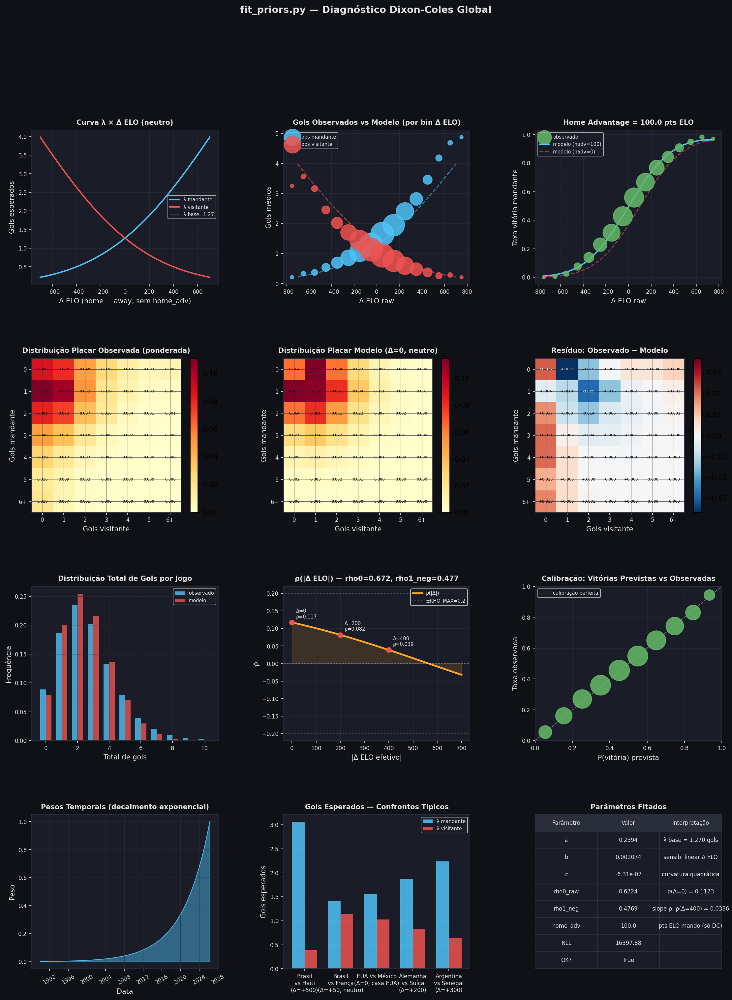
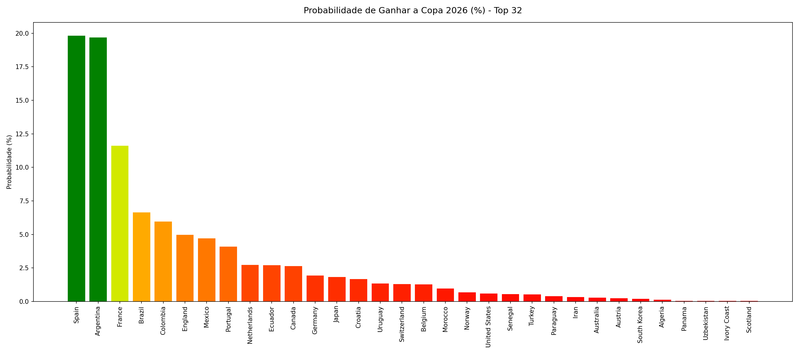
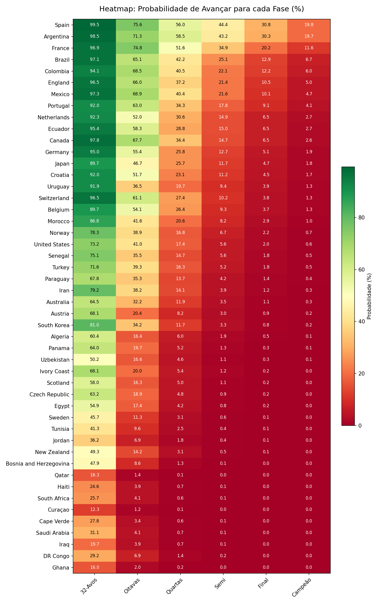

Previsão Probabilística via ELO, Redes Neurais Recorrentes e Simulação Monte Carlo
Sumário
- 1. Visão Geral e Processo de Inferência Estatística
- 2. O Sistema ELO como Proxy de Força Relativa
- 3. Das Diferenças ELO às Taxas Esperadas de Gols
- 4. Os Fatores de Correção \(K_{att}\) e \(K_{def}\)
- 5. O Modelo de Placares — Dixon-Coles sobre Poisson
- 6. Simulação Monte Carlo do Torneio
- 7. Resultados
- 8. Conclusão
1. Visão Geral e Processo de Inferência Estatística
O Problema
Prever o vencedor de uma Copa do Mundo é essencialmente um problema de inferência probabilística sobre um sistema estocástico com estrutura hierárquica. O torneio é composto de dezenas de partidas interdependentes — o resultado de um jogo determina quem participa dos seguintes — e cada partida é, por si só, um evento de alta variância: equipes inferiores vencem equipes superiores com frequência não negligenciável. Modelar esse sistema corretamente exige responder a três perguntas distintas:
- Qual é a força relativa de cada seleção? — pergunta de estimação de parâmetros
- Dado o par de times, qual é a distribuição de probabilidade sobre os possíveis placares? — pergunta de modelagem probabilística
- Dada a distribuição sobre placares individuais, qual é a probabilidade de cada time vencer o torneio inteiro? — pergunta de propagação de incerteza por uma estrutura combinatória complexa
O modelo desenvolvido neste trabalho responde a cada uma dessas perguntas com uma abordagem específica e fundamentada na literatura estatística.
Arquitetura Geral do Modelo
O pipeline de inferência opera em três etapas sequenciais:
Etapa 1 — Estimação da força relativa via ELO. A força de cada seleção é representada por seu rating ELO, calculado cronologicamente sobre todo o histórico de partidas internacionais desde 1872. A diferença de rating entre dois times (\(\Delta_{eff}\)) serve como variável explicativa fundamental: é a partir dela que se derivam as taxas esperadas de gols (\(\lambda\)) via uma função exponencial quadrática cujos parâmetros são estimados por máxima verossimilhança (MLE) sobre partidas desde 1990. O ELO captura a força estrutural e histórica de cada seleção.
Etapa 2 — Correção pela forma recente e pelo perfil de jogo. As taxas esperadas de gols derivadas do ELO representam a expectativa de longo prazo, mas o ELO não observa o volume de gols — apenas o resultado final (vitória, empate, derrota). Para incorporar tanto o desempenho ofensivo e defensivo recente quanto o perfil de jogo estrutural de cada seleção, dois fatores adimensionais são estimados por time: \(K_{att}\) (multiplicador de ataque) e \(K_{def}\) (multiplicador de defesa). Esses fatores são produzidos por uma rede neural recorrente do tipo GRU (Cho et al., 2014) treinada sobre os últimos \(T = 20\) jogos de cada seleção, com decaimento exponencial por posição na sequência (meia-vida de 7 jogos). A taxa final é \(\lambda_A = \lambda^{home} \cdot K_{att}^A \cdot K_{def}^B\), integrando força histórica, identidade ofensiva própria e vulnerabilidade defensiva do adversário.
Etapa 3 — Distribuição de placares e propagação de incerteza. As taxas finais esperadas de gols \(\lambda_A\) e \(\lambda_B\) alimentam o modelo de Dixon e Coles, 1997, que constrói uma distribuição de probabilidade conjunta sobre todos os placares possíveis (até 8 gols por time). O torneio completo é então simulado \(N = 1.000.000\) de vezes via Monte Carlo, e as frequências observadas em cada fase constituem as estimativas finais de probabilidade.
O fluxo completo pode ser resumido em:
- Cálculo do Rating ELO através do histórico de todas as partidas de todas as seleções.
- Taxa esperada de gols \(\lambda\) como função da diferença de rating ELO entre as duas equipes (utilizando MLE sobre todos os jogos desde 1990).
- Correção por \(K_{\mathrm{att}}\) e \(K_{\mathrm{def}}\): forma recente e estilo de jogo calculados utilizando uma rede neural GRU treinada sobre dados recentes.
- Distribuição de placares via Poisson modificada por Dixon-Coles.
- Simulação Monte Carlo: propagação de incerteza pelo torneio. `
O Processo de Inferência Estatística em Detalhe
Formalmente, o modelo define dois conjuntos de parâmetros:
Parâmetros dos priors \(\theta = \{a, b, c, h, \rho_0, \rho_1\}\): governam como a diferença ELO se traduz em taxas esperadas de gols e correlação. São estimados por máxima verossimilhança (MLE) sobre partidas internacionais desde 1990, com ponderação temporal por recência (meia-vida de 4 anos) e por importância do torneio. A função de log-verossimilhança maximizada é:
\[ \hat{\theta} = \arg\max_{\theta} \sum_{i=1}^{N_{hist}} w_i^{temp} \cdot \log P_{\theta}(X_i, Y_i \mid \Delta_{eff,i}) \]
onde \(w_i^{temp} = \exp\!\left(-\frac{t_{ref} - t_i}{t_{1/2}}\right)\) é o peso temporal e \((X_i, Y_i)\) é o placar observado.
Parâmetros da rede neural \(\phi\): pesos da GRU que mapeiam sequências de resultados recentes em fatores \(K_{att}\) e \(K_{def}\). São estimados por descida de gradiente (otimizador AdamW, \(\eta = 2 \times 10^{-4}\)) minimizando a log-verossimilhança negativa (NLL) Dixon-Coles ponderada, com regularização L2 sobre \(\log K\):
\[ \hat{\phi} = \arg\min_{\phi} \left[ -\sum_{i} w_i \cdot \log P_{\theta, \phi}(X_i, Y_i) \;+\; \lambda_{reg} \cdot \mathbb{E}\!\left[(\log K_{att})^2 + (\log K_{def})^2\right] \right] \]
com \(\lambda_{reg} = 0.5\) e critério de parada antecipada com paciência de 25 épocas.
A separação entre os dois conjuntos de parâmetros é deliberada: \(\theta\) captura regularidades de longo prazo no futebol, enquanto \(\phi\) captura padrões recentes por seleção. Ambos são estimados a partir dos dados, sem imposição de valores a priori além da estrutura funcional.
2. O Sistema ELO como Proxy de Força Relativa
Origem e Princípio
O sistema ELO foi proposto pelo físico húngaro-americano Arpad Elo como método de rating para xadrez (Elo, 1978). Sua ideia central é que a força de um competidor pode ser representada por um único número real, e que a diferença entre dois números codifica diretamente a probabilidade de vitória de um sobre o outro. A atualização do rating após cada partida segue a regra:
\[ \text{ELO}_i^{\,novo} = \text{ELO}_i^{\,antigo} + K_w \cdot G \cdot \bigl(S_i - \hat{p}_i\bigr) \]
onde \(S_i \in \{0, 0.5, 1\}\) é o resultado real (derrota, empate, vitória), \(\hat{p}_i\) é a probabilidade de vitória prevista antes da partida, \(K_w > 0\) é o fator de importância do torneio e \(G\) é um fator de margem de gols que amplifica o sinal de partidas com grandes diferenciais de placar:
\[ G = \begin{cases} 1{,}0 & \text{se } |S_{home} - S_{away}| \leq 1 \\ 1{,}5 & \text{se } |S_{home} - S_{away}| = 2 \\ \frac{11 + |S_{home} - S_{away}|}{8} & \text{caso contrário} \end{cases} \]
A probabilidade de vitória prevista é dada pela função logística:
\[ \hat{p}_A = \frac{1}{1 + 10^{-\Delta_{eff}/400}} \]
onde \(\Delta_{eff} = \text{ELO}_A - \text{ELO}_B + h_{fit}\)
Para o modelo Dixon-Coles, o efeito do mando de jogo é \(h_{fit} = 100\) pontos (estimado por MLE).
O ELO como Proxy Estatístico no Futebol
A questão de saber se o ELO é um bom proxy para a força relativa de seleções de futebol tem sido extensivamente estudada. É importante, contudo, contextualizar tanto as virtudes quanto as limitações do sistema no ambiente específico do futebol.
Em sistemas onde o ruído estocástico é nulo ou próximo de zero — como no xadrez, onde o resultado depende quase inteiramente da habilidade relativa dos jogadores — a diferença de ELO possui poder preditivo quase absoluto e imediato. No futebol, porém, a alta estocasticidade intrínseca ao esporte (gols acidentais, desvios de trajetória, decisões de arbitragem, variância nos pênaltis) faz com que o ELO opere estritamente como uma referência assintótica: ele se aproxima do “verdadeiro” nível de cada seleção apenas ao longo de muitas partidas. Esse ruído de curto prazo não pode ser eliminado pelo ELO por construção, o que torna indispensáveis as etapas posteriores do modelo — a correção pela GRU e a correção de Dixon-Coles — para mitigar esses efeitos em escala de partida individual.
Hvattum e Arntzen (2010) compararam o ELO com seis métodos alternativos de previsão em futebol associativo e concluíram que o sistema ELO produz previsões competitivas — e em vários cenários superiores — quando usado como covariável em modelos de regressão. A principal virtude do ELO é sua capacidade de comparar times de diferentes confederações e épocas a partir de um histórico unificado de resultados.
Ley, Van de Wiele e Van Eetvelde (2019) apresentaram uma comparação sistemática de dez modelos estatísticos para ranking de seleções, incluindo variantes do ELO e modelos Poisson bivariados. Os autores demonstram que modelos baseados em ELO têm desempenho preditivo comparável aos modelos estruturais mais complexos, especialmente quando combinados com ponderação temporal e por importância do torneio — exatamente as características incorporadas ao nosso pipeline.
Gilch e Müller (2018) aplicaram modelos de regressão Poisson com covariáveis ELO para prever a Copa do Mundo de 2018, utilizando simulação Monte Carlo para estimar probabilidades de classificação em cada fase. Esse trabalho é metodologicamente análogo ao nosso e serve como referência de validação da abordagem.
Em síntese, o ELO não é uma medida perfeita — ignora escalação, lesões e características táticas específicas — mas é um proxy estatisticamente bem fundamentado para a força relativa de seleções, robusto a variações de base de dados e computacionalmente eficiente. Essas propriedades justificam seu uso como âncora do modelo, desde que complementado pelas correções descritas nas seções seguintes.
Pesos por Importância de Torneio
Nem todas as partidas têm o mesmo valor informativo. Um amistoso jogado com escalação experimental diz muito menos sobre a real capacidade de uma seleção do que uma semifinal de Copa do Mundo. Para refletir isso, cada jogo recebe um fator \(K_w\) proporcional à sua relevância competitiva, usado tanto na atualização do ELO quanto na ponderação da função de verossimilhança:
| Categoria | Torneios | \(K_w\) |
|---|---|---|
| Copa do Mundo (FIFA) | Copa do Mundo FIFA | 40 |
| Campeonatos continentais e grandes torneios | Copa das Confederações, Eliminatórias Mundiais, Olimpíadas, etc. | 35 |
| Qualificatórias e ligas nacionais | UEFA Euro, CONCACAF Nations League, Copa América, AFC Asian Cup, etc. | 30 |
| Amistosos | - | 25 |
| Torneios não mapeados | - | 28 |
Para a estimação dos priors por MLE, existe ainda um peso temporal adicional independente: \(w_i^{temp} = \exp\!\left(-\frac{t_{ref} - t_i}{t_{1/2}}\right)\), com meia-vida de \(t_{1/2} = 4\) anos (1.460 dias). Jogos mais antigos têm influência decrescente na calibração dos parâmetros, refletindo a evolução do futebol ao longo do tempo. O ELO, por sua vez, é calculado desde 1872 sem corte — ele “aquece” nos dados antigos — e a MLE usa apenas partidas a partir de 1990 com o ELO já estabilizado.
Para amistosos, aplica-se ainda um peso de torneio adicional de \(w_{friendly} = 0.7\), multiplicado ao peso temporal. Para todos os demais torneios, \(w_{torneio} = 1.0\).
Vantagem de Sede
Para a Copa 2026, os países sede — EUA, México e Canadá — jogam com uma vantagem estrutural documentada: familiaridade com o ambiente, apoio da torcida, menor desgaste de viagem e ausência de adaptação climática e de altitude. Essa vantagem é modelada como um deslocamento aditivo no delta ELO efetivo utilizado no cálculo das taxas esperadas de gols:
\[ \Delta_{eff} = (\text{ELO}_A - \text{ELO}_B) + h_{fit} \]
O parâmetro \(h_{fit}\) é estimado por MLE conjuntamente com os demais priors. O valor calibrado foi \(h_{fit} = 100{,}0\) pontos ELO, equivalente a dizer que jogar como país sede aumenta a taxa esperada de gols do time anfitrião por um fator de \(e^{b \cdot h_{fit}} \approx e^{0{,}002 \times 100} \approx 1{,}22\) — ou seja, aproximadamente 22% mais gols esperados do que em campo neutro, tudo o mais constante.
3. Das Diferenças ELO às Taxas Esperadas de Gols
Por que Modelar Gols como Poisson?
A distribuição de Poisson descreve o número de ocorrências de um evento raro em um intervalo fixo de tempo ou espaço, sob a hipótese de que os eventos ocorrem a uma taxa média constante \(\lambda\) e de forma (aproximadamente) independente entre si. A probabilidade de observar exatamente \(k\) eventos é:
\[ P(X = k \mid \lambda) = \frac{\lambda^k \, e^{-\lambda}}{k!}, \quad k = 0, 1, 2, \ldots \]
A adequação do modelo de Poisson para gols no futebol foi estabelecida empiricamente por Maher (1982). Maher incorporou parâmetros de ataque e defesa por equipe e mostrou, por meio de testes de aderência (\(\chi^2\)), que o modelo de Poisson independente descreve adequadamente as frequências de placares no futebol inglês, embora com pequenos desvios sistemáticos nos placares baixos — um problema que Dixon e Coles resolveriam quinze anos depois. O modelo de Poisson para gols tornou-se, desde então, o ponto de partida padrão na literatura de estatística esportiva (Dixon e Coles, 1997; Karlis e Ntzoufras, 2003).
Da Diferença ELO à Taxa Esperada de Gols
Para converter \(\Delta_{eff}\) em taxas esperadas de gols \(\lambda\), adotamos uma função exponencial quadrática:
\[ \lambda^{home}(\Delta_{eff}) = \exp\!\bigl(a + b\,\Delta_{eff} + c\,\Delta_{eff}^2\bigr) \]
\[ \lambda^{away}(\Delta_{eff}) = \exp\!\bigl(a - b\,\Delta_{eff} + c\,\Delta_{eff}^2\bigr) \]
Os parâmetros \(\{a, b, c\}\) são estimados conjuntamente com os demais priors por MLE. Os valores calibrados e suas interpretações são apresentados na Seção 7.1.
Interpretação do parâmetro \(a\): O intercepto determina a taxa esperada de gols quando os dois times têm ELO idêntico (\(\Delta_{eff} = 0\)). Nesse caso, \(\lambda = e^a\) para ambos. O valor calibrado foi \(a = 0{,}2394\), correspondendo a \(\lambda = e^{0{,}2394} \approx 1{,}270\) gols por time por jogo em campo neutro com times de igual força — coerente com a média histórica do futebol internacional de alto nível.
Interpretação do parâmetro \(b\): O coeficiente linear captura a assimetria induzida pela diferença de qualidade. O valor calibrado foi \(b = 0{,}002074\): para cada 100 pontos ELO de vantagem, a taxa esperada de gols do time superior aumenta por \(e^{0{,}002074 \times 100} \approx 1{,}231\) (23% mais gols esperados), enquanto a do inferior diminui simetricamente.
Interpretação do parâmetro \(c\): O coeficiente quadrático captura a saturação para grandes diferenciais. O valor calibrado foi \(c = -6{,}31 \times 10^{-7}\), ligeiramente negativo, indicando que o efeito marginal de cada ponto ELO adicional decresce para diferenciais muito elevados — o que é empiricamente razoável, pois não se pode marcar infinitos gols independentemente de quão superior se é.
Verificação de Consistência
Por construção, as duas funções são simétricas: inverter os papéis dos times (\(\Delta_{eff} \to -\Delta_{eff}\)) troca \(\lambda^{home}\) por \(\lambda^{away}\):
\[ \lambda^{home}(+\Delta) = \lambda^{away}(-\Delta) \]
Essa simetria garante que o modelo seja internamente consistente: a taxa esperada de gols de \(A\) contra \(B\) em campo de \(A\) é exatamente o que o modelo preveria para \(B\) se o jogo fosse espelhado.
O Parâmetro \(\rho\) — Correlação de Dixon-Coles
O parâmetro \(\rho\) captura a dependência estatística entre os gols das duas equipes em uma mesma partida. Sua dependência de \(|\Delta_{eff}|\) é modelada por:
\[ \rho(\Delta_{eff}) = \rho_{max} \cdot \tanh\!\left(\rho_0 - \rho_1^{neg} \cdot \frac{|\Delta_{eff}|}{400}\right) \]
com \(\rho_{max} = 0{,}2\). Os parâmetros \(\rho_0\) e \(\rho_1^{neg}\) são parâmetros da curva de decaimento — não confundir com o próprio \(\rho\), que é o valor de correlação resultante para um dado \(\Delta_{eff}\). O valor de \(\rho_1^{neg}\) é forçado a ser não-negativo via \(\rho_1^{neg} = \text{softplus}(\rho_1^{raw})\), garantindo que \(\rho\) seja monotonamente decrescente em \(|\Delta_{eff}|\) — partidas mais desequilibradas têm menor dependência entre os gols.
Os valores calibrados foram \(\rho_0^{raw} = 0{,}6724\) e \(\rho_1^{neg} = 0{,}4769\), resultando em:
- \(\rho(\Delta_{eff} = 0) = 0{,}117\) — correlação em jogo equilibrado
- \(\rho(\Delta_{eff} = 400) = 0{,}039\) — correlação em jogo com 400 pts de diferença
Esses valores são coerentes com a estimativa original de Dixon e Coles (1997), que obtiveram \(\rho \approx -0{,}13\) (com sinal oposto por diferença de convenção) para o futebol inglês.
4. Os Fatores de Correção \(K_{att}\) e \(K_{def}\)
Motivação: As Duas Limitações do ELO
O rating ELO é, por construção, uma medida de longo prazo: ele se atualiza incrementalmente a cada partida e converge lentamente para o “verdadeiro” nível de uma seleção. Isso gera duas limitações importantes quando o objetivo é modelar o volume de gols de uma partida específica.
Primeira limitação — forma recente. Um time pode ter ELO historicamente elevado mas estar em crise de resultados: mudança de treinador, lesões em jogadores-chave, período de adaptação tática. Outro pode ter ELO modesto mas estar em ascensão acelerada. O ELO não refletirá essas divergências de forma imediata.
Segunda limitação — estilo de jogo e identidade ofensiva. O ELO é cego ao como uma equipe vence ou perde: ele registra apenas o resultado (vitória, empate, derrota), não o placar. Dois times com ELO idêntico podem ter perfis de jogo radicalmente diferentes. Uma seleção de estilo ofensivo pode vencer por 4–2 e perder por 1–3, acumulando muitos gols nos dois lados; outra, de estilo defensivo e pragmático, pode vencer por 1–0 e empatar por 0–0, com poucos gols em ambos os sentidos. Para o ELO, os dois comportamentos são indistinguíveis. Contudo, para a modelagem de placares via Poisson, a diferença é fundamental: a taxa esperada de gols \(\lambda\) de cada time é muito diferente entre os dois perfis, mesmo com força igual.
Os fatores \(K_{att}\) e \(K_{def}\) corrigem ambas as limitações simultaneamente, pois são estimados a partir dos gols marcados e sofridos nos jogos recentes de cada seleção — informação que o ELO descarta completamente.
Formalmente: \(K_{att} > 1\) significa que o time marca mais gols do que seu ELO preveria; \(K_{att} < 1\), o contrário. \(K_{def} < 1\) indica que o time sofre menos gols do que o esperado para seu nível ELO (defesa sólida ou estilo defensivo); \(K_{def} > 1\), maior vulnerabilidade relativa. Ambos são adimensionais e centrados em 1: quando não há evidência de desvio, a rede retorna \(K \approx 1\).
A Combinação com a Taxa Esperada de Gols
As taxas finais esperadas de gols que alimentam a distribuição de placares são:
\[ \lambda_A = \lambda^{home}(\Delta_{eff}) \cdot K_{att}^A \cdot K_{def}^B \]
\[ \lambda_B = \lambda^{away}(\Delta_{eff}) \cdot K_{att}^B \cdot K_{def}^A \]
O número esperado de gols de \(A\) é, portanto, o produto de três componentes: o referencial do diferencial ELO, a correção pelo perfil ofensivo e forma recente do próprio time \(A\) (\(K_{att}^A\)), e a correção pela vulnerabilidade defensiva e forma recente do adversário \(B\) (\(K_{def}^B\)). O ataque de \(A\) encontra a defesa de \(B\); cada um entra com seu fator multiplicativo.
Se todos os fatores forem iguais a 1, \(\lambda_A = \lambda^{home}\) — o modelo reduz ao prior puro, baseado apenas no diferencial ELO.
A Rede Neural GRU
Os fatores \(K_{att}\) e \(K_{def}\) são produzidos por uma rede neural recorrente do tipo GRU (Gated Recurrent Unit), introduzida por Cho et al. (2014) e empiricamente avaliada por Chung et al. (2014). A GRU processa a sequência dos últimos \(T = 20\) jogos de cada seleção. Para cada jogo \(t\) da sequência, são extraídas seis variáveis (\(F = 6\)):
- Diferença ELO normalizada: \(\Delta_{elo} / 400\)
- Gols marcados pela seleção naquele jogo (normalizados por 3)
- Gols sofridos pela seleção naquele jogo (normalizados por 3)
- Peso do torneio \(w_i\) (importância competitiva da partida)
- Resultado codificado: \(+1\) (vitória), \(0\) (empate), \(-1\) (derrota)
- Decaimento por posição: \(e^{-\lambda_{decay} \cdot pos}\), com \(\lambda_{decay} = \ln 2 / 7 \approx 0{,}099\) (meia-vida de 7 jogos)
Essas variáveis formam um tensor de entrada de dimensão \(T \times 6\). Times com menos de \(T\) jogos são completados com zeros (zero-padding).
A Mecânica da GRU
A GRU mantém um vetor de estado oculto \(h_t \in \mathbb{R}^{H}\) (com \(H = 48\)) atualizado a cada passo por:
\[ z_t = \sigma(W_z x_t + U_z h_{t-1} + b_z) \quad \text{(gate de atualização)} \]
\[ r_t = \sigma(W_r x_t + U_r h_{t-1} + b_r) \quad \text{(gate de reset)} \]
\[ \tilde{h}_t = \tanh\!\bigl(W_h x_t + U_h (r_t \odot h_{t-1}) + b_h\bigr) \quad \text{(estado candidato)} \]
\[ h_t = (1 - z_t) \odot h_{t-1} + z_t \odot \tilde{h}_t \quad \text{(estado atualizado)} \]
O gate de atualização \(z_t\) atua como uma constante de inércia do sistema: quando \(z_t \approx 0\), o estado oculto é mantido essencialmente inalterado, o que equivale a dizer que o novo jogo é pouco informativo — o modelo filtra variações ruidosas do desempenho recente e não as incorpora ao perfil da seleção. Quando \(z_t \approx 1\), o estado é completamente substituído pelo candidato, refletindo uma atualização decisiva na visão do modelo sobre a equipe.
O gate de reset \(r_t\) funciona como um gatilho de detecção de ruptura: quando \(r_t \approx 0\), o candidato \(\tilde{h}_t\) é computado ignorando quase inteiramente o histórico acumulado, permitindo que o modelo descarte o estado anterior frente a uma mudança estrutural abrupta — como uma troca súbita de comando tático ou uma série atípica de resultados que rompe com o padrão estabelecido. Combinados, os dois gates permitem à GRU distinguir entre flutuação normal de desempenho (que deve ser suavizada) e ruptura estrutural (que exige reinicialização do estado), produzindo estimativas de \(K_{att}\) e \(K_{def}\) que refletem o perfil corrente da seleção sem se deixar enganar por ruído.
O estado oculto final \(h_T\) é projetado por uma rede feedforward com uma camada oculta de 32 neurônios com ativação ReLU:
\[ k^{raw} = W_2 \cdot \text{ReLU}(W_1 h_T + b_1) + b_2 \in \mathbb{R}^2 \]
Os escalares brutos são então mapeados para os fatores \(K\) positivos pela função softplus:
\[ K_{att} = \ln(1 + e^{k_{att}^{raw}}) + \varepsilon, \quad K_{def} = \ln(1 + e^{k_{def}^{raw}}) + \varepsilon \]
com \(\varepsilon = 10^{-2}\) garantindo \(K > 0\) para todo input.
Compartilhamento de Pesos e Regularização
A mesma GRU é utilizada para processar a sequência de qualquer seleção. Esse compartilhamento de parâmetros força o modelo a aprender uma representação universal de “forma recente” que seja interpretável da mesma forma para qualquer time, e age como regularização implícita: com 48 seleções e 20 jogos cada, o dataset é modesto, e parâmetros compartilhados reduzem o risco de sobreajuste.
A regularização explícita é feita por um termo L2 sobre \(\log K\):
\[ \mathcal{L}_{reg} = \lambda_{reg} \cdot \mathbb{E}\!\left[(\log K_{att})^2 + (\log K_{def})^2\right] \]
com \(\lambda_{reg} = 0{,}5\). Como \(\log(1) = 0\), essa regularização penaliza desvios de \(K = 1\) de forma quadrática na escala logarítmica — equivalente a um prior log-normal centrado em 1. Times com histórico recente pouco informativo regridem ao referencial do ELO (\(K \approx 1\)).
5. O Modelo de Placares: Dixon-Coles sobre Poisson
O Problema da Independência
O modelo de Poisson independente — gols de \(A\) e \(B\) como variáveis independentes com parâmetros \(\lambda_A\) e \(\lambda_B\) — seria a escolha mais simples. Contudo, Dixon e Coles (1997) observaram empiricamente que esse modelo subestima sistematicamente a frequência dos placares 0-0, 1-0, 0-1 e 1-1, e superestima outros placares próximos. A causa é a dependência tática entre os times: o estado do placar influencia as escolhas de jogo de ambas as equipes, quebrando a hipótese de independência dos gols, especialmente em placares baixos.
A Correção de Dixon-Coles
Dixon e Coles propuseram uma correção multiplicativa aplicada exclusivamente aos quatro placares baixos:
\[ P(X{=}x, Y{=}y) = \tau(x, y, \lambda_A, \lambda_B, \rho) \cdot \text{Pois}(x;\, \lambda_A) \cdot \text{Pois}(y;\, \lambda_B) \]
onde:
\[ \tau(x, y) = \begin{cases} 1 - \lambda_A \lambda_B \rho & \text{se } x = 0,\; y = 0 \\[6pt] 1 + \lambda_A \rho & \text{se } x = 1,\; y = 0 \\[6pt] 1 + \lambda_B \rho & \text{se } x = 0,\; y = 1 \\[6pt] 1 - \rho & \text{se } x = 1,\; y = 1 \\[6pt] 1 & \text{caso contrário} \end{cases} \]
Para \(\rho > 0\), os fatores \(\tau\) reduzem a probabilidade dos placares 1-0 e 0-1 (fatores \(1 + \lambda_A \rho > 1\) e \(1 + \lambda_B \rho > 1\) atuam como denominadores da redistribuição) e aumentam relativamente o 0-0 e o 1-1. O efeito líquido, para os valores típicos de \(\lambda\) e \(\rho\) calibrados, é um aumento da massa probabilística nos empates de placar baixo, consistente com o padrão histórico.
Validade matemática: Para que \(\tau(0,0) = 1 - \lambda_A \lambda_B \rho > 0\), é necessário \(\rho < 1/(\lambda_A \lambda_B)\). Com \(\rho_{max} = 0{,}2\) e \(\lambda \approx 1{,}27\), temos \(1/(\lambda_A \lambda_B) \approx 0{,}62 \gg 0{,}2\), garantindo validade em todo o espaço de parâmetros utilizados. O valor \(\rho = 0\) recupera o modelo de Poisson independente como caso especial.
A Distribuição sobre Resultados e Pênaltis
A partir da matriz de placares \(M[x][y] = P(X=x, Y=y)\), as probabilidades de resultado são obtidas por:
\[ P(\text{vitória } A) = \sum_{x > y} M[x][y], \quad P(\text{empate}) = \sum_{x = y} M[x][x], \quad P(\text{vitória } B) = \sum_{y > x} M[x][y] \]
Em partidas eliminatórias, empates levam à disputa de pênaltis. A probabilidade de vitória nos pênaltis é modelada proporcionalmente às taxas esperadas de gols:
\[ P(A \text{ vence nos pênaltis}) = \frac{\lambda_A}{\lambda_A + \lambda_B} \]
A Função de Verossimilhança
O modelo é estimado por minimização da NLL ponderada:
\[ \mathcal{L}_{NLL} = -\sum_{i=1}^{N} w_i \cdot \log P_{\theta,\phi}(X_i, Y_i) \]
onde o log da probabilidade Dixon-Coles de um placar \((X, Y)\) é:
\[ \log P(X, Y) = \log \tau(X, Y) + X \log \lambda_A - \lambda_A - \log(X!) + Y \log \lambda_B - \lambda_B - \log(Y!) \]
6. Simulação Monte Carlo do Torneio
Por que Monte Carlo?
A Copa 2026 tem 48 seleções distribuídas em 12 grupos de 4 times. Os dois primeiros colocados de cada grupo mais os 8 melhores terceiros avançam para uma fase de 32 equipes, seguida de oitavas, quartas, semifinais e final. Calcular analiticamente \(P(\text{time } A \text{ vence a Copa})\) exigiria somar as probabilidades de todas as trajetórias possíveis pelo chaveamento — um espaço combinatório intratável. A simulação Monte Carlo resolve isso pela amostragem estocástica: em vez de enumerar, simula-se o torneio completo \(N\) vezes, e as frequências convergem às probabilidades verdadeiras pela Lei dos Grandes Números.
Pré-Computação das Matrizes de Placar
Para cada par ordenado de seleções \((i, j)\), a matriz de probabilidades de placar \(M_{ij}\) de dimensão \(9 \times 9\) (placares 0–8 por time) é calculada uma única vez antes do início das simulações. Com 48 times, há \(48 \times 47 = 2.256\) matrizes a pré-computar. Esse investimento inicial torna cada simulação individual muito rápida: sorteia-se apenas um inteiro de uma distribuição discreta com 81 massas pré-computadas.
O Procedimento de Simulação
Cada uma das \(N = 1.000.000\) de simulações executa o torneio completo:
Fase de grupos: Para cada um dos 12 grupos, os 6 confrontos (\(\binom{4}{2} = 6\)) são simulados sorteando um placar da distribuição \(M_{ij}\). A classificação final é determinada pela seguinte hierarquia:
- Pontos totais (3 por vitória, 1 por empate)
- Confronto direto (pontos, saldo e gols no(s) jogo(s) direto(s))
- Saldo de gols geral
- Gols marcados no total
- Sorteio (em caso de empate absoluto)
Melhores terceiros: Os 12 terceiros colocados são ordenados por pontos, saldo de gols e gols marcados. Os 8 melhores avançam, completando os 32 classificados.
Fase eliminatória: Em cada confronto, sorteia-se um placar de \(M_{ij}\). Em caso de empate, decide-se nos pênaltis por uma Bernoulli com \(p = \lambda_A / (\lambda_A + \lambda_B)\).
Estimativa das Probabilidades e Intervalos de Confiança
Após \(N = 1.000.000\) de simulações, a estimativa da probabilidade de cada time atingir uma fase \(f\) é:
\[ \hat{p}_{i,f} = \frac{\text{número de simulações em que o time } i \text{ atingiu a fase } f}{N} \]
O intervalo de confiança binomial de 95% é:
\[ IC_{95\%} = \hat{p}_{i,f} \pm 1{,}96 \cdot \sqrt{\frac{\hat{p}_{i,f}(1 - \hat{p}_{i,f})}{N}} \]
Com \(N = 1.000.000\), a margem de erro máxima (95é \(\pm 0{,}098\%\).
7. Resultados
Parâmetros do Modelo Calibrado
A tabela abaixo apresenta os seis parâmetros dos priors estimados por MLE, juntamente com sua interpretação e os valores derivados mais relevantes.
| Parâmetro | Valor | Interpretação |
|---|---|---|
| \(a\) | 0,2394 | \(\lambda = e^a = 1{,}270\) gols esperados por time em campo neutro com times iguais |
| \(b\) | 0,002074 | Sensibilidade linear: +100 pts ELO\(\Rightarrow\) +23% gols esperados |
| \(c\) | \(-6{,}31 \times 10^{-7}\) | Curvatura quadrática (saturação para grandes diferenciais) |
| \(h_{fit}\) | 100 pts ELO | Vantagem de sede equivalente em pontos ELO |
| \(\rho_0^{raw}\) | 0,6724 | \(\rho(\Delta=0) = 0{,}117\) (correlação em jogo equilibrado) |
| \(\rho_1^{neg}\) | 0,4769 | Decaimento:\(\rho(\Delta=400) = 0{,}039\) |
O painel de diagnóstico do modelo de priors é apresentado na figura abaixo:

O painel contém doze sub-gráficos: (i) a curva \(\lambda \times \Delta\text{ELO}\), mostrando a relação exponencial simétrica entre diferencial e taxa esperada de gols; (ii) gols observados vs. modelados por bin de \(\Delta\text{ELO}\), confirmando boa aderência; (iii) taxa de vitória do mandante por diferencial, com e sem vantagem de sede; (iv–vi) distribuições de placar observadas, modeladas e resíduos; (vii) distribuição total de gols por jogo; (viii) a curva \(\rho(|\Delta\text{ELO}|)\); (ix) calibração de vitórias previstas vs. observadas; (x) pesos temporais; (xi) gols esperados em confrontos típicos; (xii) tabela de parâmetros fitados.
ELO e Fatores K por Seleção
A tabela abaixo apresenta, para cada seleção participante da Copa 2026, o rating ELO pré-torneio, os fatores \(K_{att}\) e \(K_{def}\) estimados pela GRU e o grupo de origem. As seleções estão ordenadas por ELO decrescente.
| # | Seleção | Gr | Sede | ELO | \(K_{att}\) | \(K_{def}\) |
|---|---|---|---|---|---|---|
| 1 | Espanha | H | 2182 | 0,9598 | 1,0897 | |
| 2 | Argentina | J | 2169 | 0,9626 | 1,0120 | |
| 3 | França | I | 2120 | 0,9634 | 1,0338 | |
| 4 | Brasil | C | 2061 | 0,9773 | 0,9607 | |
| 5 | Inglaterra | L | 2045 | 0,9554 | 0,9755 | |
| 6 | Colômbia | K | 2042 | 1,0070 | 0,9672 | |
| 7 | Portugal | K | 2025 | 0,9861 | 0,9831 | |
| 8 | Holanda | F | 2010 | 0,9863 | 1,0112 | |
| 9 | Equador | E | 1999 | 0,9001 | 0,8951 | |
| 10 | Alemanha | E | 1985 | 1,0084 | 1,0281 | |
| 11 | Japão | F | 1983 | 0,9566 | 0,9683 | |
| 12 | Croácia | L | 1981 | 0,9696 | 1,0125 | |
| 13 | Marrocos | C | 1968 | 0,8865 | 0,9876 | |
| 14 | Uruguai | H | 1961 | 0,9248 | 0,9291 | |
| 15 | Suíça | B | 1944 | 1,0140 | 1,0088 | |
| 16 | Bélgica | G | 1944 | 1,0133 | 0,9968 | |
| 17 | Noruega | I | 1932 | 1,0454 | 1,0505 | |
| 18 | Turquia | D | 1928 | 0,9629 | 1,0212 | |
| 19 | México | A | ✓ | 1927 | 0,9580 | 0,9360 |
| 20 | Senegal | I | 1922 | 0,9626 | 0,9840 | |
| 21 | Paraguai | D | 1893 | 0,9604 | 0,9399 | |
| 22 | Áustria | J | 1888 | 0,9704 | 0,9822 | |
| 23 | Austrália | D | 1886 | 0,9659 | 0,9670 | |
| 24 | Canadá | B | ✓ | 1884 | 0,9474 | 0,9273 |
| 25 | Irã | G | 1880 | 0,9669 | 0,9610 | |
| 26 | Coreia do Sul | A | 1861 | 0,9664 | 0,9854 | |
| 27 | Argélia | J | 1861 | 0,9643 | 0,9846 | |
| 28 | Panamá | L | 1822 | 0,9573 | 0,9954 | |
| 29 | Uzbequistão | K | 1817 | 0,9286 | 0,9393 | |
| 30 | EUA | D | ✓ | 1809 | 1,0980 | 1,0510 |
| 31 | Costa do Marfim | E | 1798 | 0,9496 | 0,9357 | |
| 32 | Egito | G | 1791 | 0,9102 | 0,9484 | |
| 33 | Escócia | C | 1791 | 0,9927 | 0,9502 | |
| 34 | Suécia | F | 1783 | 1,0876 | 1,0779 | |
| 35 | Rep. Tcheca | A | 1782 | 0,9809 | 0,9980 | |
| 36 | Tunísia | F | 1763 | 0,9623 | 0,9526 | |
| 37 | Jordânia | J | 1763 | 1,0615 | 1,0077 | |
| 38 | DR Congo | K | 1750 | 0,9123 | 0,9559 | |
| 39 | Nova Zelândia | G | 1730 | 1,1262 | 0,9742 | |
| 40 | Iraque | I | 1723 | 0,9046 | 0,9792 | |
| 41 | Haiti | C | 1676 | 1,0296 | 0,9933 | |
| 42 | Arábia Saudita | H | 1670 | 0,9797 | 0,9607 | |
| 43 | Cabo Verde | H | 1662 | 0,9560 | 0,9648 | |
| 44 | Bósnia-Herz. | B | 1651 | 0,9969 | 0,9442 | |
| 45 | África do Sul | A | 1645 | 0,9919 | 0,9906 | |
| 46 | Gana | L | 1626 | 1,0234 | 0,9977 | |
| 47 | Curaçao | E | 1586 | 1,0269 | 1,0280 | |
| 48 | Catar | B | 1553 | 1,0263 | 1,0561 |
Leituras notáveis da tabela:
- Espanha e Argentina lideram o ELO com vantagem clara sobre o campo. A Espanha apresenta \(K_{def} = 1{,}090\), indicando que seu estilo de posse e pressão alta gera mais gols sofridos do que o esperado para uma equipe de seu nível — o ELO puro subestimaria sua vulnerabilidade defensiva. A Argentina tem \(K_{def} = 1{,}012\), próximo ao neutro.
- Colômbia (\(K_{att} = 1{,}007\), \(K_{def} = 0{,}967\)) e Brasil (\(K_{def} = 0{,}961\)) apresentam perfis defensivos sólidos, marcando menos e sofrendo menos do que o ELO preveria.
- EUA (\(K_{att} = 1{,}098\), \(K_{def} = 1{,}051\)) têm perfil de alta intensidade em ambos os sentidos, com os dois fatores acima de 1 — combinação que, em campo próprio com a vantagem de sede, produz jogos de alto volume de gols.
- Marrocos (\(K_{att} = 0{,}887\)) e Equador (\(K_{att} = 0{,}900\)) têm os menores multiplicadores de ataque entre os times de ELO mais alto, indicando estilo mais cauteloso ofensivamente.
- Nova Zelândia (\(K_{att} = 1{,}126\)) tem o maior multiplicador de ataque entre todas as seleções, mas com ELO baixo (1.730), o efeito na taxa esperada de gols final é limitado.
Probabilidades de Título e Progressão por Fase
O gráfico abaixo apresenta as probabilidades de título para as 32 seleções mais favoritas, derivadas de 1.000.000 de simulações Monte Carlo:

O heatmap a seguir mostra as probabilidades de avançar a cada fase para todas as 48 seleções:

8. Conclusão
A equação central que resume o modelo é:
\[ \lambda_A = \underbrace{\exp(a + b\,\Delta_{eff} + c\,\Delta_{eff}^2)}_{\text{força histórica (ELO)}} \;\cdot\; \underbrace{K_{att}^A}_{\substack{\text{ataque recente} \\ \text{+ perfil ofensivo}}} \;\cdot\; \underbrace{K_{def}^B}_{\substack{\text{defesa do adversário} \\ \text{+ perfil defensivo}}} \]
Este trabalho apresenta um modelo probabilístico para previsão de resultados na Copa do Mundo FIFA 2026, combinando três componentes que se complementam de forma coerente.
O sistema ELO fornece a base estrutural. A diferença de rating entre dois times, calculada cronologicamente sobre décadas de futebol internacional, é convertida em taxas esperadas de gols por uma função exponencial quadrática estimada por MLE sobre partidas desde 1990. Os parâmetros calibrados (\(a = 0{,}239\), \(b = 0{,}00207\), \(c = -6{,}3 \times 10^{-7}\)) são estatisticamente fundamentados e interpretáveis: a taxa esperada de 1,27 gols por time por jogo em campo neutro, o efeito de +23% de gols para cada 100 pontos ELO de vantagem e a vantagem de sede de 100 pontos ELO equivalente são todos consistentes com a literatura empírica.
Os fatores \(K_{att}\) e \(K_{def}\), estimados por uma rede neural GRU sobre os 20 jogos mais recentes de cada seleção, corrigem as duas limitações estruturais do ELO na modelagem de placares: a lentidão de adaptação à forma recente e a cegueira ao volume de gols. Os valores estimados revelam perfis de jogo distintos e empiricamente plausíveis: Espanha com defesa mais exposta do que seu ELO sugere (\(K_{def} = 1{,}09\)), Brasil com defesa compacta (\(K_{def} = 0{,}96\)), EUA com estilo de alta intensidade em ambos os sentidos, Marrocos e Equador com identidade ofensiva abaixo do ELO.
O modelo de Dixon-Coles traduz as taxas esperadas de gols \(\lambda\) em distribuições de probabilidade sobre placares, corrigindo o viés da dupla-Poisson independente nos placares baixos. A simulação Monte Carlo com \(N = 1.000.000\) de iterações propaga essa distribuição por toda a estrutura do torneio com margem de erro inferior a \(\pm 0{,}1\%\).
O resultado central das simulações é a concentração de probabilidade entre Espanha e Argentina, cada uma com aproximadamente 20% de chance de título — reflexo de sua superioridade clara em ELO sobre o restante do campo. A França é a terceira favorita com 11,6%, seguida por Brasil (6,7%) e Colômbia (6,0%).
Referências
[1] Cho, K., van Merrienboer, B., Gulcehre, C., Bahdanau, D., Bougares, F., Schwenk, H., & Bengio, Y. (2014). Learning Phrase Representations using RNN Encoder-Decoder for Statistical Machine Translation, Proceedings of EMNLP 2014. arXiv:1406.1078. Link
[2] Chung, J., Gulcehre, C., Cho, K., & Bengio, Y. (2014). Empirical Evaluation of Gated Recurrent Neural Networks on Sequence Modeling, arXiv:1412.3555. Link
[3] Dixon, M. J., & Coles, S. G. (1997). Modelling Association Football Scores and Inefficiencies in the Football Betting Market, Journal of the Royal Statistical Society: Series C (Applied Statistics), 46(2), 265–280. doi:10.1111/1467-9876.00065. Link
[4] Elo, A. E. (1978). The Rating of Chessplayers, Past and Present, Arco Publishing, New York. Link
[5] Gilch, L. A., & Müller, S. (2018). On Elo Based Prediction Models for the FIFA Worldcup 2018, arXiv:1806.01930. Link
[6] Groll, A., Schauberger, G., & Tutz, G. (2015). Prediction of Major International Soccer Tournaments Based on Team-Specific Regularized Poisson Regression: An Application to the FIFA World Cup 2014, Journal of Quantitative Analysis in Sports, 11(2), 97–115. Link
[7] Hvattum, L. M., & Arntzen, H. (2010). Using ELO Ratings for Match Result Prediction in Association Football, International Journal of Forecasting, 26(3), 460–470. doi:10.1016/j.ijforecast.2009.10.002. Link
[8] Karlis, D., & Ntzoufras, I. (2003). Analysis of Sports Data by Using Bivariate Poisson Models, Journal of the Royal Statistical Society: Series D (The Statistician), 52(3), 381–393. doi:10.1111/1467-9884.00366. Link
[9] Ley, C., Van de Wiele, T., & Van Eetvelde, H. (2019). Ranking Soccer Teams on the Basis of Their Current Strength: A Comparison of Maximum Likelihood Approaches, Statistical Modelling, 19(1), 55–73. doi:10.1177/1471082X18817650. Link
[10] Maher, M. J. (1982). Modelling Association Football Scores, Statistica Neerlandica, 36(3), 109–118. doi:10.1111/j.1467-9574.1982.tb00782.x. Link
[11] McHale, I., & Scarf, P. (2011). Modelling the Dependence of Goals Scored by Opposing Teams in International Soccer Matches, Statistical Modelling, 11(3), 219–236. doi:10.1177/1471082X1001100303. Link